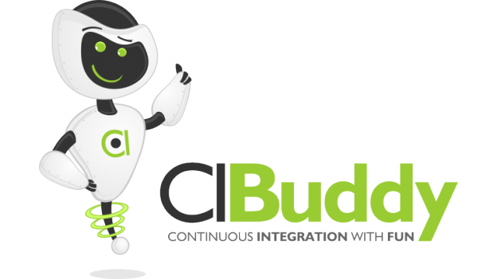

CIBuddy is the number one open source application to turn to when deploying eXtreme feedback devices within your team or company. It is not only capable of connecting to the most popular build servers, but also supports various eXtreme feedback devices out of the box.
Packaged with CIBuddy's core application comes support for various eXtreme feedback devices, enabling you to just plug-in a supported device and be ready to use it. No complex configuration, no tedious fiddling with various device drivers and no reverse engineering of proprietary commands. Pick one of our supported devices and you're all set.
CIBuddy comes out of the box with built-in support for the three most popular open-source Java™ build servers. Namely Jenkins-CI, Hudson-CI and Travis-CI. All three could be used with a very simple xml configuration allowing for fast deployments. Other build servers could be supported with very little programming effort as soon as they expose a public API that is accessible through the network.
Get started in minutes. No complex setup, no difficult documentation and no steep learning curve. The only thing you need is a proper USB HID driver (usually already provided by your OS) and some really basic knowledge about how to edit xml configuration files. In most cases you only have to change the server url and the project name and your good to go. That simple!
CIBuddy is provided as an Open Source project available at github.com. It is released under the Apache™ License 2.0 and utilizes many leading technologies, such as Java™, OSGi™, Maven, Apache™ Karaf and Eclipse™ Equinox. The source code is well documented and easy to extend, enabling 3rd parties to openly contribute or extend the functionality in closed source, if desired. The freedom is all yours!